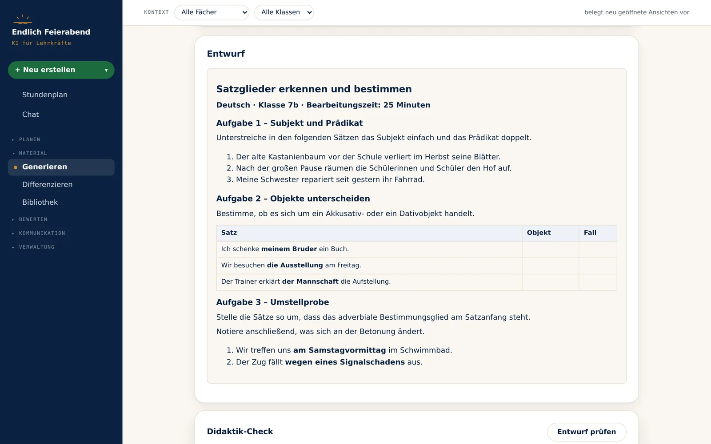
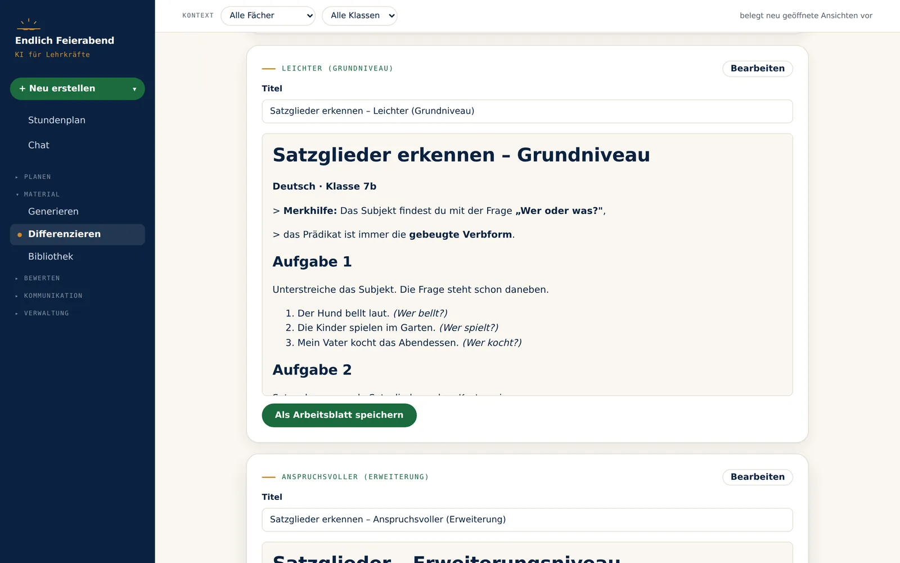
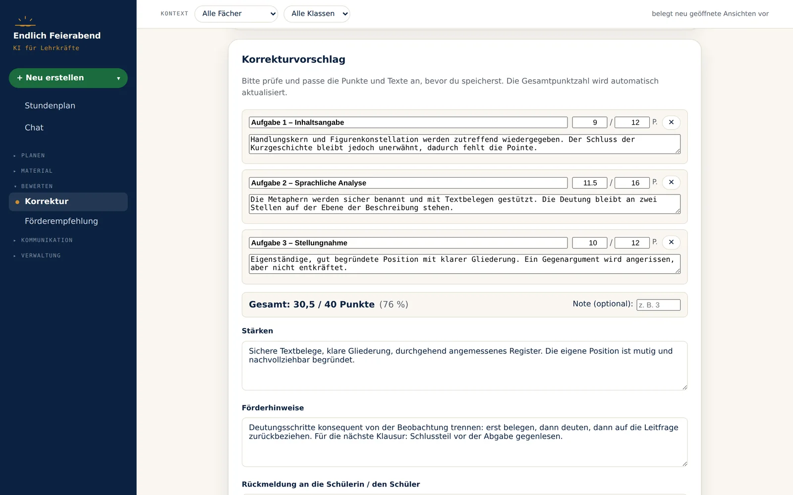
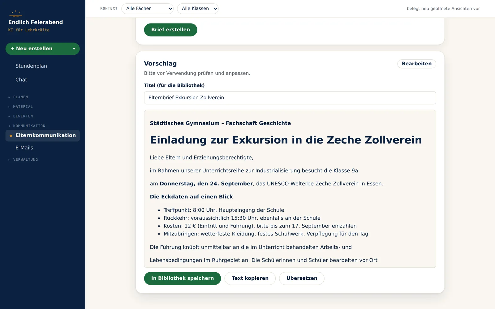

Klausuren, Erwartungshorizonte und Arbeitsblätter in Minuten statt Stunden — direkt auf deinem Rechner. Die KI gleicht deinen Lehrplan ab, du gibst frei, fertig. Alle Daten bleiben lokal bei dir.
Ein agentisches Werkzeug, das deine Materialien kennt — und dir die Routinearbeit abnimmt.
Beides entsteht als verknüpftes Paar — passend zum Lehrplan und zu deiner Lerngruppe. Du prüfst die Vorschau und gibst sie frei, bevor DOCX und PDF geschrieben werden.
Material für jedes Fach und jede Stufe — sauber formatiert und direkt einsatzbereit als Word- und PDF-Datei.
Lade Kernlehrpläne und alte Klausuren hoch. Die App durchsucht sie semantisch und antwortet auf Basis deiner eigenen Dokumente.
Mit WebUntis oder manuellem Raster siehst du, wie viele echte Unterrichtsstunden bis zur Klausur bleiben — A/B-Wochen und Ferien automatisch berücksichtigt.
Deine Dokumente und Klausuren liegen auf deinem Rechner — nicht in einer fremden Cloud.
Drei Profile: bestes Preis-Leistungs-Verhältnis, Höchstleistung — oder ausschließlich europäische Modelle. Umschalten geht jederzeit.
Keine Hochglanz-Montage — das sind Bildschirmfotos aus der Anwendung.




Die gezeigten Klassen, Namen und Texte sind frei erfunden. Die von der KI erzeugten Inhalte sind Beispieldarstellungen — was bei dir herauskommt, hängt von deinen Vorgaben und deinen hinterlegten Materialien ab.
Die App läuft komplett lokal. Datenbank, hochgeladene Dokumente und generierte Dateien bleiben im Benutzerverzeichnis deines Betriebssystems.
Einzige Ausnahme ist die KI-Anfrage selbst. Sie läuft über den Server von „Endlich Feierabend“ zum Sprachmodell — dort werden nur Zähler für deine Abrechnung gespeichert, keine Inhalte deiner Anfragen. Wo es heikel wird, sagt es die App: In der Elternkommunikation und beim Schulbereich steht der Hinweis, so wenig personenbezogene Daten wie möglich einzugeben.
Lade die Datei für dein System oben und folge dem Installations-Assistenten. Hinweise zu Windows SmartScreen und macOS findest du weiter unten.
Einmal Adresse eintragen, Bestätigungslink klicken — fertig. Dein Gratis-Kontingent steht sofort bereit, ein Schlüssel bei einem KI-Anbieter ist nicht nötig.
Pflege in den Einstellungen deine Lerngruppen und lade in der Bibliothek Kernlehrpläne und alte Klausuren hoch.
Fordere im Chat oder unter „Generieren“ Klausuren, Erwartungshorizonte oder Arbeitsblätter an — prüfen, freigeben, fertig.
.exe.dmgHinweis: Aktuell gibt es nur eine Mac-Version für Apple Silicon. Für ältere Intel-Macs steht noch keine Version bereit — melde dich gern, wenn du eine brauchst.
.dmg öffnen und die App in den Ordner „Programme“ ziehen.%APPDATA%/LehrerKI/. Es findet keine zentrale Speicherung statt.Lokal, ohne Abo und in wenigen Minuten startklar.
Aktuelle Version: 1.0.0 · Windows 10/11 & Apple Silicon